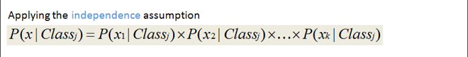
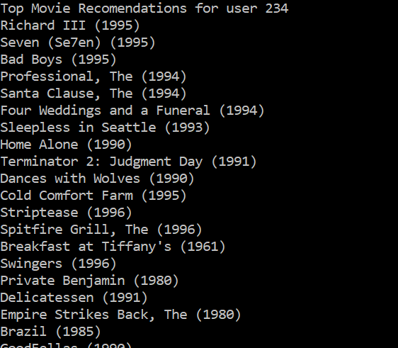
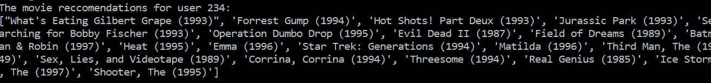
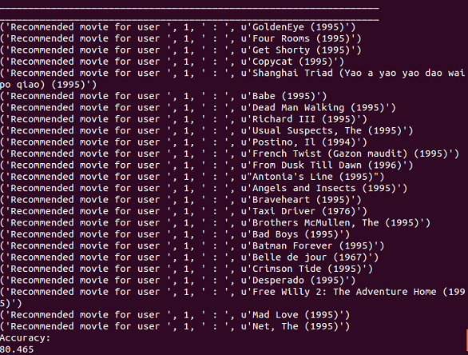
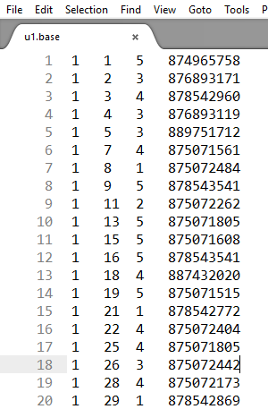
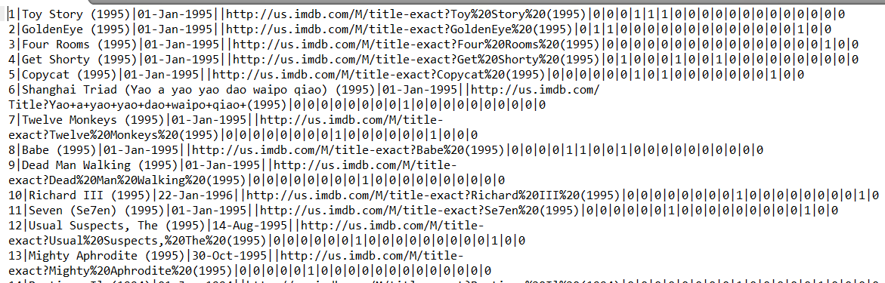
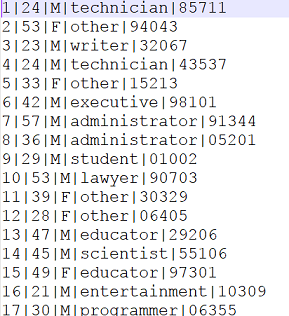

K Nearest Neighbors
- Read the user,movies and ratings data.
- Calculate the number of users and movies to build a matrix.
- Populate the matrix(rows represent users and columns represent movies) with rating values.
- Construct a distance matrix which contains distances from each user to all other users.The distance is calculated using euclidean distance function(euclidean fn is imported from scipy.spatial.distance library).
- Calculate the top 100 users similar to the user for whom movies are being recommended.
- Calculate the mean movie scores for all the movies rated by the top 100 similar users.
- Sort the mean movie scores and take their movie indexes.
- Remove the movies seen by the current user from the sorted set.
- Print top 20 movies recommended to the current user.
NAIVE BAYES
- Read the training,test,movie data.
- Group the training data based on user and separate the user_ids,movie_ids,ratings.The same step is done with the testing data.
- Find the maximum user and movie indices in training data and build a matrix of that size and populate the ratings in it.
- The ratings are populated in the matrix such that any rating>=3 is given a value of 1 and any rating<=3 is given -1
- Calculate the total number of ratings by counting the number of ones and minus ones in the matrix and adding them.
- A function naive_bayes_classifier is defined where a matrix containing probabilities for the each position of the rating matrix is built.
- Compare the predicted probability matrix to the test probability matrix to calculate accuracy.
- Recommend top 25 movies.
- Run the job using the following command
spark-submit naivebayes_scratch.py <.base filepath> <.test filepath> <.item filepath>

Content Based
- Choose the genres from the top rated movies of the user
- Average of the ratings given by other users is calculated for each movie of that genre.
- Top 20 movies of that genre are recommended to that user.
RESULTS
KNN

Content Based

Naive Bayes

OUR TEAM
SUNISHA CHALASANI ( # 800962445 ) DHENUKA BHARGAVI RANGAM ( # 800963261 )
VARSHINI KODEM ( # 800966826 )
Tasks accomplished
- Definitely accomplished: KNN to find the top movie recommendations for a user.
- Likely Accomplished:Implemented Content based filtering and the accuracy was tested with KNN,Naive Bayes implementation and found to be around 80%(Naive Bayes).
- Ideally Accomplished: Implemented Naive Bayes algorithm for recommending.
DATA SET
Data Set: Movielens data set is the focus.
http://grouplens.org/datasets/movielens/100k/
About the data
- Dataset contains 100k records of rated movies provided by the movielens organisation.
- The u.data data contains user_id,movie_id,rating,timestamp respectively for each row.
- The u.item contains user_id,movie_name,date released,imdb link,genre respectively for each movie.
- The u.user contains user_id,age,gender,profession,genre,zipcode respectively for each user.
Input data
User Movie file

Movies file

User file
